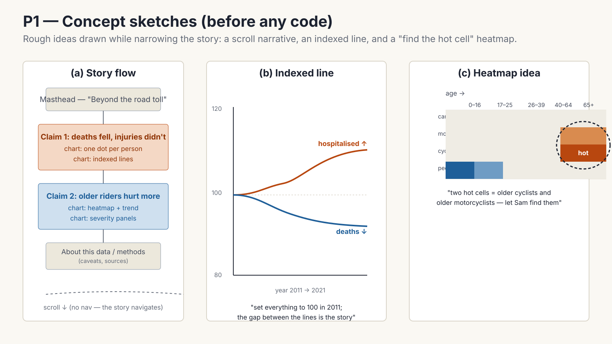
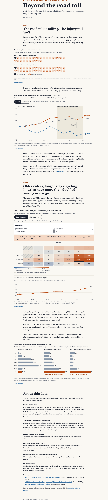
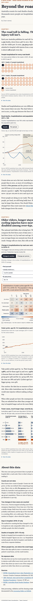
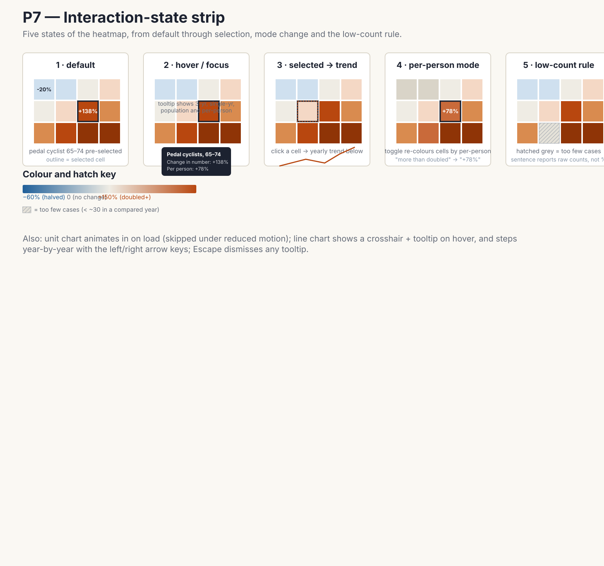

Week 11 design checkpoint. Figures P1–P8: concept → wireframe → high-fidelity build → interaction states. Print to PDF for a single document.

P1 — Concept sketches. Three rough ideas drawn before any code: (a) the two-chapter scroll narrative, (b) an indexed line with two series diverging from 2011 = 100, and (c) a road-user × age heatmap with the "hot" older-cyclist cell circled. Redrawn from the ASCII sketches in CLAUDE_CONTEXT/FOCUS_2_IDEAS.md.
P3 — Wireframe detail: Chapter 1 and Chapter 2 figures. Placement of the Counts/Per-person toggle, the "Find yourself" selectors, the sentence callout, the colour legend, the linked trend block, and the three severity panels.P4 — Low-fidelity wireframe: mobile (375px). Single stacked column; charts reflow for the narrow width; heatmap age labels stack; data tables scroll inside their container.

P5 — High-fidelity build: desktop. Headless-Chrome full-page capture of the live site at 1280px — the unit chart, indexed lines with annotations, the heatmap with finder and trend, and the severity panels.

P6 — High-fidelity build: mobile. Headless-Chrome full-page capture at 375px (device-emulation width), confirming the stacked layout with no horizontal page scroll.

P7 — Interaction-state strip. Five heatmap states — default selection, hover/focus tooltip, click → linked yearly trend, per-person mode, and the low-count hatch rule — with the colour/hatch key.P8 — Design evolution. The indexed line chart and the heatmap from concept sketch, to wireframe, to the shipped D3 chart — showing where the log-ratio colour and the 3-year-average encoding were added.